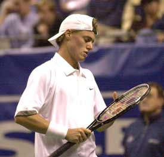
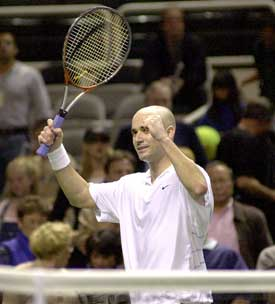
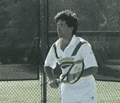
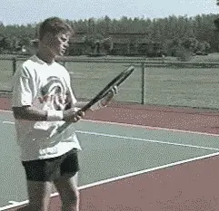
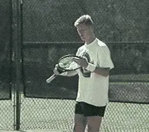
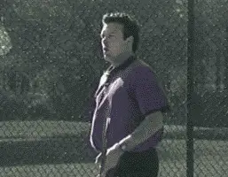

← Bài trước: Mental game Mục lục | 🏠 Mental Game Trang chủ | Bài tiếp: → Mental Toughness Training: The 16 Second Cure - Part 2
Huấn luyện tinh thần: Thuốc chữa 16 giây - Phần 1
Thư viện kiến thức quần vợt toàn diện — Cơ bản, Phân tích kỹ thuật, Thư viện tham khảo và nhiều hơn nữa
Huấn luyện tinh thần: Thuốc chữa 16 giây - Phần 1
Bởi Jim Loehr

Hành vi giữa các điểm: yếu tố quan trọng nhất trong việc phát triển tinh thần.
Hãy nghĩ về trận đấu vừa rồi của bạn. Bạn đã dành hầu hết thời gian như thế nào? Đánh cú thuận tay, cú trái tay, chơi giao bóng và bắt lưới? Thực tế là, hầu hết thời gian trận đấu, bạn không đánh bóng gì cả. Chỉ khoảng 20% đến 30% thời gian trận đấu được dành cho việc đánh bóng thực sự. Phần còn lại là thời gian giữa các điểm và chuyển đổi game.
Bạn có thể đã chơi nhiều năm mà chưa bao giờ nghĩ về cách bạn sử dụng phần lớn thời gian trên sân. Tuy nhiên, nếu chúng ta xác định yếu tố quan trọng nhất trong việc phát triển tinh thần, đó chính là cách một tay vợt sử dụng các khoảng thời gian giữa các điểm và các game.
Bạn có thể không bao giờ giao bóng như Pete Sampras, chạy như Lleyton Hewitt hoặc đánh cú thuận tay như Andre Agassi, nhưng có một điều mà mỗi tay vợt đều có thể học để làm tốt như những tay vợt hàng đầu thế giới, đó chính là cách sử dụng thời gian giữa các điểm để trở nên tinh thần kiên cường.
Khi chúng ta nghiên cứu các tay vợt, điều không ngẫu nhiên là họ hành xử theo những cách rất cụ thể giữa các điểm. Và đó chính là hành vi mà chúng ta gọi là bốn giai đoạn, hay Thuốc chữa 16 giây. Và đó là chìa khóa để đạt được hiệu suất cạnh tranh nhất quán.

Luyện tập Thuốc chữa 16 giây có thể giúp bạn cung cấp năng lượng cho hiệu suất từ cảm xúc tích cực của mình.
Mục tiêu của chúng ta trong quá trình huấn luyện là đạt được và duy trì Trạng thái Hiệu suất lý tưởng của mình (xem Phần 1). Bốn giai đoạn là một kỹ thuật được chứng minh để giúp bạn đạt được mục tiêu này và là một kỹ thuật được mô hình hóa bởi những tay vợt hàng đầu trong làng.
Đối với nhiều tay vợt, các giai đoạn thực sự là một Thuốc chữa 16 giây cho các vấn đề về cảm xúc trên sân. Luyện tập chúng sẽ giúp bạn phát triển khả năng cung cấp năng lượng cho hiệu suất từ cảm xúc tích cực của mình, và giữ được cảm xúc tích cực trong những thách thức mà tay vợt thường gặp phải trong thi đấu trận.
Bây giờ, những tay vợt chuyên nghiệp làm gì để giữ tinh thần kiên cường giữa các điểm? Đầu tiên, bất kể điểm kết thúc như thế nào, họ vẫn giữ tinh thần tích cực về mặt thể chất. Thể chất của bạn liên quan chặt chẽ với khí hậu cảm xúc nội tâm của bạn. Bằng cách giữ tinh thần tích cực với cơ thể của mình, những tay vợt hàng đầu cũng giữ tinh thần tích cực.
Giai đoạn 1: Phản ứng thể chất tích cực
Hãy xem điều gì xảy ra sau một điểm của tay vợt chuyên nghiệp. Cho dù tay vợt đã thắng hay thua điểm, đánh một cú thắng hay mắc lỗi không bắt buộc, các phản ứng rất tương tự. Tay vợt sẽ thực hiện một chuyển động quyết định với cơ thể ngay lập tức khi điểm kết thúc.

Giai đoạn 1 là phản ứng thể chất tích cực, cho dù bạn thắng hay thua điểm.
Nếu anh ấy đã đánh một cú tuyệt vời, anh ấy có thể thể hiện cảm xúc thể chất đó, tự mình khích lệ mình, hoặc thể hiện sự công nhận về một cú tốt của đối thủ. Nếu anh ấy đã mắc lỗi, anh ấy có thể luyện tập sửa chữa thể chất. Sau đó, anh ấy sẽ quay lại và đi xa khỏi lỗi, như thể nói, không vấn đề gì. Vai sau được thẳng, vợt thường đi vào tay không chủ đạo. Các cánh tay được giãn ra và treo tự do. Đầu lên, cằm ngang với mặt đất. Mắt nhìn về phía trước và xuống.
Cho dù anh ấy có cảm thấy như thế nào, tay vợt đơn giản là không cho phép bản thân thể hiện cảm xúc tiêu cực. Đây là Giai đoạn Một và được gọi là phản ứng thể chất tích cực. Nó kéo dài từ 3 đến 5 giây.
Giai đoạn 2: Thư giãn

Giai đoạn 2 là thư giãn và phục hồi.
Giai đoạn hai là thư giãn. Mục tiêu là phục hồi về mặt thể chất và cảm xúc từ điểm đó.
Tay vợt đi qua đường baseline. Anh ấy duy trì kiểm soát mắt chính xác, thường tập trung vào dây vợt của vợt vợt. Anh ấy hít thở sâu và đều đặn và cố gắng giảm nhịp tim xuống mức tối ưu. Trong giai đoạn này, tay vợt nên tránh suy nghĩ có ý thức ngoài những câu đơn giản như "thư giãn, bình tĩnh, không sao," và tập trung chủ yếu vào việc thở.
Nếu cần thiết, anh ấy có thể đi lại phía sau baseline cho đến khi cân bằng được tái lập.
Giai đoạn Hai mất từ 6 đến 15 giây, tùy thuộc vào điểm trước đó có bao nhiêu căng thẳng hoặc điểm tiếp theo có quan trọng đến mức nào.
Giai đoạn 3: Chuẩn bị
Giai đoạn Ba là chuẩn bị. Chuẩn bị bắt đầu khi tay vợt di chuyển vào vị trí để chơi, bất kể là giao bóng hay trả giao bóng. Thường xuyên, tay vợt báo hiệu sự bắt đầu của giai đoạn này bằng cách nhìn lên phía sân của đối thủ, thực hiện một tuyên bố thể chất tích cực với cơ thể mình, như thể nói, "Tôi sẽ thắng điểm này."

Giai đoạn 3 là chuẩn bị. Bạn sẽ chơi điểm tiếp theo như thế nào?
Đây là thời điểm để quyết định cách chơi điểm tiếp theo. Tôi sẽ giao bóng ở đâu? Tôi có nên giao bóng và bắt lưới không? Có một mẫu chiến thuật cụ thể nào tôi muốn theo dõi không?
Ví dụ, đánh vào phía yếu của đối thủ hoặc tiếp cận mạng trên quả bóng ngắn đầu tiên. Nếu đó là một điểm quan trọng, tay vợt có thể nhắc nhở bản thân mình chơi tấn công. Anh ấy có thể nhắc nhở bản thân mình để tích cực và tiếp tục chiến đấu.
Nếu anh ấy đang gặp vấn đề kỹ thuật với một cú đánh cụ thể, anh ấy có thể hình dung việc thực hiện đúng. Hoặc, anh ấy có thể nhắc nhở bản thân mình tập trung vào điều gì đó đơn giản hơn như "chỉ bóng."
Giai đoạn Ba là thời điểm tay vợt quản lý hướng chiến lược và cảm xúc của trận đấu. Với sự luyện tập, một tay vợt học chính xác những gì mình cần chuẩn bị trong một tình huống hoặc đối mặt với một đối thủ nhất định. Nó nên mất từ 3 đến 5 giây để hoàn thành giai đoạn này.
Giai đoạn 4: Lễ nghi

Giai đoạn 4 là Lễ nghi, giữ tinh thần thư giãn và tập trung ngay trước khi chơi.
Giai đoạn Bốn là giai đoạn lễ nghi. Đây là giai đoạn cuối cùng trước khi chơi, được thiết kế để giữ cho tay vợt thư giãn và làm sâu thêm sự tập trung. Nếu bạn xem các tay vợt chuyên nghiệp, bạn sẽ thấy rằng họ tuân theo các lễ nghi cụ thể và hầu như không bao giờ lệch khỏi chúng, ngay cả trong suốt một trận đấu năm set.
Lễ nghi là một oasis của sự thoải mái trong sự không chắc chắn xoay vần của thi đấu trận. Trên giao bóng, lễ nghi bao gồm vài lần bóng nảy, sau đó là một khoảng dừng, trước khi bắt đầu chuyển động. Điều này giúp tay vợt không vội vàng giao bóng.
Trên trả giao bóng, nó thường có nghĩa là di chuyển chân lên và xuống với những bước nhanh hoặc lắc lư nhịp nhàng về phía trước và phía sau với trọng lượng chuyển về phía trước. Hoàn thành giai đoạn lễ nghi mất thêm 5 đến 8 giây.
Thời gian tổng cộng để hoàn thành tất cả bốn giai đoạn là tối thiểu 16 giây, lên đến đầy đủ 25 giây được phép giữa các điểm. Độ dài chính xác tùy thuộc vào tình huống và nhịp điệu nội tâm của bạn.
Nhấp vào ảnh để xem chuỗi hoàn chỉnh của bốn Giai đoạn trong Thuốc chữa 16 giây.

Jim Loehr là một người tiên phong huyền thoại trong lĩnh vực hiệu suất con người. Một tay vợt chuyên nghiệp hàng đầu và vẫn thi đấu quốc gia trong các sự kiện USTA, Jim đã tạo ra lĩnh vực huấn luyện tinh thần với nghiên cứu cách mạng của mình về tay vợt chuyên nghiệp hàng đầu. Anh ấy đã trở thành một trong những giọng nói có ảnh hưởng nhất trong quần vợt và huấn luyện quần vợt trong hơn 30 năm, và là tác giả của nhiều cuốn sách bán chạy nhất.
Anh ấy đã mở rộng ảnh hưởng của mình xa hơn nhiều lĩnh vực thể thao với việc thành lập Học viện Hiệu suất Con người nơi anh ấy và nhân viên của mình đã làm việc với hàng trăm lãnh đạo trong kinh doanh, pháp luật và lực lượng đặc biệt quân sự. Trong mười năm qua, anh ấy cũng đã chỉ đạo một học viện cho các tay vợt trẻ giúp các em học được ý nghĩa thực sự của việc thắng cuộc sống.
Nguồn: tennisplayer.net lưu trữ — Huấn luyện tinh thần - Thuốc chữa 16 giây - P1.docx (thư viện giảng dạy của John Yandell, 2002-2022). Được trích xuất và hiển thị dưới dạng HTML cho Tennis Future Lab.